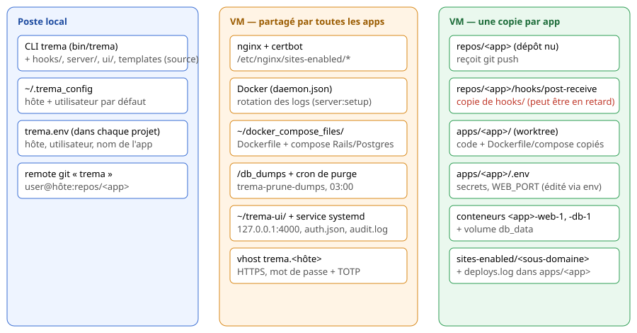
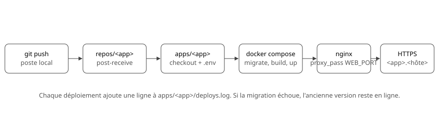

Trema est un PaaS minimaliste, auto-hébergé, inspiré de Heroku : un git push déploie une app sur votre propre VM. Cette page explique où vit chaque élément, ce qui est centralisé (partagé) ou propre à chaque app, et comment les commandes les relient. Public visé : le mainteneur et toute personne qui voudrait utiliser ou contribuer au projet.
Il n'y a ni serveur central, ni base de données Trema : tout est piloté en SSH/rsync depuis le poste local par le script bash bin/trema. L'état vit dans des fichiers et dans Docker.

local VM partagé VM par app
| Élément | Zone | Chemin | Créé par |
|---|
Copié depuis le central. Le hook post-receive (copié dans chaque dépôt nu à la création de l'app) et les templates Docker (copiés dans chaque worktree à chaque déploiement) sont des copies. Une copie n'est mise à jour que par trema update (hook) ou au prochain déploiement (templates, à partir de ~/docker_compose_files, lui-même mis à jour par update).
trema ui) ; plus de commande trema init ni de trema.env : l'hôte et l'utilisateur viennent de ~/.trema_config, le nom de l'app du remote git trema (ou de --app <nom>).~/repos/<app> (dépôt nu) sur la VM et y copie hooks/.<app>.<hôte> (les _ deviennent -) et obtient le certificat via certbot.git remote add trema … puis git push trema main.git push trema main
~/apps/<app>..env (Rails : utilisateur/mot de passe Postgres aléatoires ; app avec son propre docker-compose.yml : copie de .env.example).docker-compose.yml dans le dépôt, copie le Dockerfile et le compose Rails + Postgres, puis build, démarre db et joue bin/rails db:prepare ; en cas d'échec, arrêt et ancienne version conservée.docker compose up --build --force-recreate -d, puis lecture du port publié, écrit dans .env (WEB_PORT) et dans le proxy_pass du vhost, puis redémarrage de nginx.deploys.log.trema env et l'interfacetrema env ouvre .env dans vim sur la VM puis recrée les conteneurs. L'interface web (trema ui:install) est un service systemd Node sans dépendance, écoute sur 127.0.0.1:4000 ; elle lit les apps, logs, .env et deploys.log et pilote Docker. Accès uniquement en HTTPS trema.<hôte> (mot de passe + TOTP) ; le login est exigé partout sauf avec TREMA_DEV=1 (développement).
trema updateRecopie docker_compose_files, relance server:setup (rotation des logs Docker, cron de purge de /db_dumps) et recopie le hook de l'app courante. Les autres apps gardent leur ancien hook jusqu'à ce qu'on lance update dans chacune.
trema destroyArrête les conteneurs et supprime le volume de la base, repos/<app>, apps/<app>, envs/<app>.env, le vhost, puis le remote git local. Les dumps de /db_dumps sont conservés (jusqu'à la purge).
load_pg_dump envoie un fichier dans /db_dumps (monté dans le conteneur db) et le rejoue ; archive_db fait un pg_dump des données vers data/ en local ; heroku_pg_dump récupère les données depuis Heroku.
apps/<app>/.env sur la VM, jamais dans le dépôt.HttpOnly; Secure; SameSite=Strict), limite de requêtes nginx sur /api/login, blocage par IP, journal audit.log.docker-compose.yml avec un service web sur le port 3000.trema est dans le groupe docker, ce qui revient presque à être root (on peut monter / dans un conteneur) : seul Docker rootless donnerait une vraie isolation. Le gain : pas de SSH root, un périmètre sudo restreint (2 scripts qui vérifient leurs arguments) et un service UI non privilégié.bin/trema n'est pas supporté : la CLI localise trema-config et ses dossiers (hooks, templates, server, ui) à partir de son propre chemin, sans suivre les liens.destroy, deploy) sont incomplètes ou non testées de bout en bout ; deploy est appelée mais non définie.git, rsync, Node.js (pour l'interface), jq (recommandé), sudo.*.<hôte> vers la VM (chaque app = un sous-domaine, plus trema.<hôte> pour l'interface).trema) : trema server:setup le crée (groupe docker), lui donne /db_dumps et /etc/nginx/trema.d/ (vhosts), et installe deux scripts root, seules commandes autorisées en sudo sans mot de passe : /usr/local/sbin/trema-nginx-reload (nginx -t + reload) et trema-cert <domaine> (refuse tout domaine hors <nom>.<hôte>). Les autres actions d'admin (server:setup, ui:install) demandent le mot de passe sudo de trema.git clone https://github.com/NicolasMarlier/trema.git # ajouter le dossier bin/ du clone au PATH (~/.zshrc ou ~/.bashrc) : export PATH="$PWD/trema/bin:$PATH" trema config:edit --global # TREMA_HOSTNAME et TREMA_USERNAME=root (le temps de l'installation) # 1) Nouvelle machine : premier setup (crée l'utilisateur trema, /db_dumps, trema.d, sudoers, scripts root) trema server:setup # sur la VM : sudo passwd trema, puis copier votre clé : ssh-copy-id trema@hôte trema config:edit --global # passer TREMA_USERNAME=trema, désactiver ensuite le login SSH root # Machine déjà installée en root : trema server:migrate-user (voir ci-dessous) # depuis n'importe quel projet git : # créer l'app dans l'interface (trema ui), puis copier ses commandes : git remote add trema user@hôte:repos/trema update # copie les templates, lance server:setup, met à jour le hook trema ui:install # interface web git push trema main # déploie
trema server:migrate-user se lance une fois (avec TREMA_USERNAME=root) et est idempotente : relancée, elle reprend où elle s'est arrêtée. Elle crée l'utilisateur et les scripts (server:setup), copie les clés SSH autorisées, déplace repos apps envs docker_compose_files trema-ui vers /home/trema (avec chown), déplace les vhosts des apps vers /etc/nginx/trema.d/, réécrit le service trema-ui (User=trema) puis vérifie ssh trema@hôte avant de modifier ~/.trema_config et le remote trema du dossier courant. Aucun conteneur n'est recréé (le nom du projet compose ne change pas). Les remotes d'autres projets sont listés (root@ → trema@). Elle propose enfin de désactiver PermitRootLogin. Avant de la lancer, définir un mot de passe pour trema (sudo passwd trema) : il sert aux actions d'admin.
Les commandes d'app lisent l'hôte dans ~/.trema_config et le nom de l'app dans le remote trema (ou --app) ; un ancien trema.env est supprimé automatiquement. Lancez update une fois par app pour que son hook soit à jour ; les templates sont nécessaires au premier git push (template Rails).